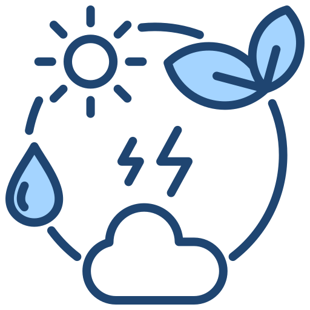

Strategia di sostenibilità lungo l’intera catena del valore
Il perseguimento di un modello di business sostenibile rappresenta per Zuegg un impegno prioritario, che si articola attraverso una strategia trasversale definita. La nostra azione si declina nelle seguenti direttrici fondamentali:
Innovazione del packaging: orientiamo il design delle nostre soluzioni di confezionamento verso standard di maggiore sostenibilità, privilegiando la riduzione drastica delle componenti plastiche e l’impiego di materiali di origine vegetale, in un’ottica di economia circolare.
Valorizzazione del capitale umano: promuoviamo programmi di formazione continua e iniziative di sensibilizzazione interna, finalizzati a trasformare ogni collaboratore in un attore consapevole delle sfide ambientali e in un autentico ambasciatore dei valori di sostenibilità di Zuegg.
Ottimizzazione della supply chain: attraverso lo sviluppo di un percorso metodologico strutturato, attualmente in fase di implementazione, ci proponiamo di estendere i nostri standard di sostenibilità lungo l'intera filiera di fornitura, garantendo coerenza e integrità ai nostri processi di approvvigionamento.